ECD SYSTEM > TERMINALS OF ECM |

| Terminal No. (Symbol) | Wiring Color | Terminal Description | Condition | Specified Condition |
| A38*1-20 (BATT) - C45*1-81 (E1) A52*2-20 (BATT) - C46*2-81 (E1) | L - BR | Battery (for measuring the battery voltage and for the ECM memory) | Always | 11 to 14 V |
| A38*1-28 (IGSW) - C45*1-81 (E1) A52*2-28 (IGSW) - C46*2-81 (E1) | B - BR | Engine switch | Engine switch on (IG) | 11 to 14 V |
| A38*1-2 (+B) - C45*1-81 (E1) A52*2-2 (+B) - C46*2-81 (E1) | B-W - BR | Power source of ECM | Engine switch on (IG) | 11 to 14 V |
| A38*1-44 (MREL) - C45*1-81 (E1) A52*2-44 (MREL) - C46*2-81 (E1) | W-R - BR | EFI relay | Engine switch on (IG) | 11 to 14 V |
| 10 seconds elapsed after engine switch turned off | 0 to 1.5 V | |||
| C45*1-66 (VCPM) - C45*1-75 (E2) C46*2-66 (VCPM) - C46*2-75 (E2) | L-B - BR | Power source of manifold absolute pressure sensor (for PIM) | Engine switch on (IG) | 4.5 to 5.5 V |
| C45*1-70 (VCM) - C45*1-75 (E2) C46*2-70 (VCM) - C46*2-75 (E2) | L-R - BR | Power source of fuel pressure sensor (for PCR1) | Engine switch on (IG) | 4.5 to 5.5 V |
| C45*1-90 (VCEG) - C45*1-87 (EEGL) C46*2-90 (VCEG) - C46*2-87 (EEGL) | L-R - BR | Power source of EGR valve position sensor | Engine switch on (IG) | 4.5 to 5.5 V |
| C45*1-91 (VCVL) - C45*1-92 (EVLU) C46*2-91 (VCVL) - C46*2-92 (EVLU) | L-R - BR | Power source of throttle position sensor | Engine switch on (IG) | 4.5 to 5.5 V |
| C45*1-72 (VG) - C45*1-118 (EVG) C46*2-72 (VG) - C46*2-118 (EVG) | L-Y - G-W | Mass air flow meter | Engine warmed up and idling, A/C switch off | 0.5 to 3.4 V |
| C45*1-71 (THA) - C45*1-75 (E2) C46*2-71 (THA) - C46*2-75 (E2) | Y - BR | Intake air temperature sensor (built into mass air flow meter) | Engine warmed up and idling, intake air temperature at 0 to 80°C (32 to 176°F) | 0.5 to 3.4 V |
| A38*1-53 (VPA) - A38*1-57 (EPA) A52*1-53 (VPA) - A52*1-57 (EPA) | R - W-L | Accelerator pedal position sensor (for engine control) | Engine switch on (IG), accelerator pedal fully released | 0.6 to 1.0 V |
| Engine switch on (IG), accelerator pedal fully depressed | 3.0 to 4.6 V | |||
| A38*1-54 (VPA2) - A38*1-58 (EPA2) A52*1-54 (VPA2) - A52*1-58 (EPA2) | GR-G - BR | Accelerator pedal position sensor (for sensor malfunction detection) | Engine switch on (IG), accelerator pedal fully released | 1.4 to 1.8 V |
| Engine switch on (IG), accelerator pedal fully depressed | 3.7 to 5.0 V | |||
| A38*1-55 (VCPA) - A38*1-57 (EPA) A52*1-55 (VCPA) - A52*1-57 (EPA) | L-W - W-L | Power source of accelerator pedal position sensor (for VPA) | Engine switch on (IG) | 4.5 to 5.5 V |
| A38*1-56 (VCP2) - A38*1-58 (EPA2) A52*1-56 (VCP2) - A52*1-58 (EPA2) | V - BR | Power source of accelerator pedal position sensor (for VPA2) | Engine switch on (IG) | 4.5 to 5.5 V |
| C45*1-74 (THIA) - C45*1-75 (E2) C46*2-74 (THIA) - C46*2-75 (E2) | W-G - BR | Intake air temperature sensor (after turbocharged) | Engine warmed up and idling, intake air temperature sensor (after turbocharged) at 0 to 80°C (32 to 176°F) | 0.5 to 3.4 V |
| C45*1-76 (THW) - C45*1-75 (E2) C46*2-76 (THW) - C46*2-75 (E2) | G-B - BR | Engine coolant temperature sensor | Engine warmed up and idling, engine coolant temperature at 60 to 120°C (140 to 248°F) | 0.2 to 1.2 V |
| C45*1-40 (#1) - C45*1-81 (E1) | Y - BR | Fuel injector | Idling | Pulse generation (see waveform 1) |
| C46*2-40 (#1) - C46*2-81 (E1) | ||||
| C45*1-39 (#2) - C45*1-81 (E1) | B - BR | |||
| C46*2-39 (#2) - C46*2-81 (E1) | ||||
| C45*1-38 (#3) - C45*1-81 (E1) | L - BR | |||
| C46*2-38 (#3) - C46*2-81 (E1) | ||||
| C45*1-37 (#4) - C45*1-81 (E1) | R - BR | |||
| C46*2-37 (#4) - C46*2-81 (E1) | ||||
| C45*1-36 (#5) - C45*1-81 (E1) | G - BR | |||
| C46*2-36 (#5) - C46*2-81 (E1) | ||||
| C45*1-35 (#6) - C45*1-81 (E1) | V - BR | |||
| C46*2-35 (#6) - C46*2-81 (E1) | ||||
| C45*1-34 (#7) - C45*1-81 (E1) | W - BR | |||
| C46*2-34 (#7) - C46*2-81 (E1) | ||||
| C45*1-33 (#8) - C45*1-81 (E1) | P - BR | |||
| C46*2-33 (#8) - C46*2-81 (E1) | ||||
| C45*1-80 (G+) - C45*1-79 (G-) C46*2-80 (G+) - C46*2-79 (G-) | W - B | Camshaft position sensor | Idling | Pulse generation (see waveform) |
| C45*1-78 (NE+) - C45*1-77 (NE-) C46*2-78 (NE+) - C46*2-77 (NE-) | B - W | Crankshaft position sensor | Idling | Pulse generation (see waveform) |
| C45*1-114 (PIM) - C45*1-75 (E2) C46*2-114 (PIM) - C46*2-75 (E2) | P-L - BR | Manifold absolute pressure sensor | Negative pressure of 40 kPa (300 mmHg, 11.8 in.Hg) applied | 0.1 to 0.7 V |
| Same as atmospheric pressure | 0.8 to 1.4 V | |||
| Positive pressure of 170 kPa (1275 mmHg, 50.2 in.Hg) applied | 1.6 to 2.2 V | |||
| A38*1-45 (IREL) - C45*1-81 (E1) A52*2-45 (IREL) - C46*2-81 (E1) | P-L - BR | EDU relay (EDU 1) | Engine switch off | 11 to 14 V |
| Idling | 0 to 1.5 V | |||
| A38*1-46 (IRL2) - C45*1-81 (E1) A52*2-46 (IRL2) - C46*2-81 (E1) | P-B - BR | EDU relay (EDU 2) | Engine switch off | 11 to 14 V |
| Idling | 0 to 1.5 V | |||
| C45*1-69 (PCR1) - C45*1-75 (E2) C46*2-69 (PCR1) - C46*2-75 (E2) | B - BR | Fuel pressure sensor | Idling (Approximately 35 MPa (357 kgf/cm2, 5078 psi)) | 1.3 to 1.8 V |
| C45*1-63 (GREL) - C45*1-81 (E1) C46*2-63 (GREL) - C46*2-81 (E1) | R-B - BR | No. 1 glow relay | Cranking | 11 to 14 V |
| Idling | 0 to 1.5 V | |||
| C45*1-62 (GRL2) - C45*1-81 (E1) C46*2-62 (GRL2) - C46*2-81 (E1) | R - BR | No. 2 glow relay | Cranking | 11 to 14 V |
| Idling | 0 to 1.5 V | |||
| C45*1-116 (THF) - C45*1-75 (E2) C46*2-116 (THF) - C46*2-75 (E2) | G-R - BR | Fuel temperature sensor | Engine switch on (IG) | 0.5 to 3.4 V |
| C45*1-106 (PCV+) - C45*1-105 (PCV-) C46*2-106 (PCV+) - C46*2-105 (PCV-) | W - BR | Suction control valve | Idling | Pulse generation (see waveform 2) |
| C45*1-61 (INJF) - C45*1-81 (E1) C46*2-61 (INJF) - C46*2-81 (E1) | G - BR | No. 1 injector driver | Idling | Pulse generation (see waveform 3) |
| C45*1-60 (INF2) - C45*1-81 (E1) C46*2-60 (INF2) - C46*2-81 (E1) | W - BR | No. 2 injector driver | Idling | Pulse generation (see waveform 3) |
| C45*1-93 (VLU) - C45*1-75 (E2) C46*2-93 (VLU) - C46*2-75 (E2) | L-W - BR | Throttle position sensor (for Bank 1) | Engine switch on (IG) (throttle valve fully opened) | 2.8 to 3.8 V |
| Idling (throttle valve fully closed) | 0.4 to 1.0 V | |||
| C45*1-103 (VLU2) - C45*1-75 (E2) C46*2-103 (VLU2) - C46*2-75 (E2) | L-W - BR | Throttle position sensor (for Bank 2) | Engine switch on (IG) (throttle valve fully opened) | 2.8 to 3.8 V |
| Idling (throttle valve fully closed) | 0.4 to 1.0 V | |||
| C45*1-42 (LUSL) - C45*1-81 (E1) C46*2-42 (LUSL) - C46*2-81 (E1) | B - BR | Diesel throttle duty signal (for Bank 1) | Engine warmed up, racing engine | Pulse generation (see waveform 4) |
| C45*1-84 (LUS2) - C45*1-81 (E1) C46*2-84 (LUS2) - C46*2-81 (E1) | B - BR | Diesel throttle duty signal (for Bank 2) | Engine warmed up, racing engine | Pulse generation (see waveform 4) |
| C45*1-89 (EGLS) - C45*1-75 (E2) C46*2-89 (EGLS) - C46*2-75 (E2) | R-W - BR | No. 1 EGR valve position sensor | Engine switch on (IG) | 3.0 to 4.6 V |
| C45*1-88 (EGS2) - C45*1-75 (E2) C46*2-88 (EGS2) - C46*2-75 (E2) | R-B - BR | No. 2 EGR valve position sensor | Engine switch on (IG) | 3.0 to 4.6 V |
| C45*1-107 (EGRS) - C45*1-81 (E1) C46*2-107 (EGRS) - C46*2-81 (E1) | R - BR | No. 1 EGR valve | Engine warmed up and idling | Pulse generation (see waveform 5) |
| C45*1-108 (ERS2) - C45*1-81 (E1) C46*2-108 (ERS2) - C46*2-81 (E1) | R-W - BR | No. 2 EGR valve | Engine warmed up and idling | Pulse generation (see waveform 5) |
| C45*1-49 (VNTO) - C45*1-81 (E1) C46*2-49 (VNTO) - C46*2-81 (E1) | R-Y - BR | Turbo motor driver (for Bank 1) | Idling | Pulse generation (see waveform 6) |
| C45*1-47 (VNO2) - C45*1-81 (E1) C46*2-47 (VNO2) - C46*2-81 (E1) | R-W - BR | Turbo motor driver (for Bank 2) | Idling | Pulse generation (see waveform 6) |
| C45*1-50 (VNTI) - C45*1-81 (E1) C46*2-50 (VNTI) - C46*2-81 (E1) | R-L - BR | Turbo motor driver (for Bank 1) | Idling | Pulse generation (see waveform 7) |
| C45*1-48 (VNI2) - C45*1-81 (E1) C46*2-48 (VNI2) - C46*2-81 (E1) | BR - BR | Turbo motor driver (for Bank 2) | Idling | Pulse generation (see waveform 7) |
| A38*1-36 (STP) - C45*1-81 (E1) A52*2-36 (STP) - C46*2-81 (E1) | R - BR | Stop light switch | Engine switch on (IG), brake pedal depressed | 7.5 to 14 V |
| Engine switch on (IG), brake pedal released | 0 to 1.5 V | |||
| A38*1-35 (ST1-) - C45*1-81 (E1) A52*2-35 (ST1-) - C46*2-81 (E1) | R-W - BR | Stop light switch (opposite to STP) | Engine switch on (IG), brake pedal depressed | 0 to 1.5 V |
| Engine switch on (IG), brake pedal released | 7.5 to 14 V | |||
| A38*1-15 (TACH) - C45*1-81 (E1) A52*2-15 (TACH) - C46*2-81 (E1) | W-G - BR | Engine speed | Idling | Pulse generation (see waveform 8) |
| A38*1-8 (SPD) - C45*1-81 (E1) A52*2-8 (SPD) - C46*2-81 (E1) | V-R - BR | Speed signal from combination meter | Engine switch on (IG), wheel rotated slowly | Pulse generation (see waveform 9) |
| A38*1-48 (STA) - C45*1-81 (E1) A52*2-48 (STA) - C46*2-81 (E1) | R-B - BR | Starter signal | Cranking | 6.0 V or more |
| C45*1-1 (ALT) - C45*1-81 (E1) C46*2-1 (ALT) - C46*2-81 (E1) | R - BR | Generator duty ratio | Idling | Pulse generation |
| A38*1-27 (TC) - C45*1-81 (E1) A52*2-27 (TC) - C46*2-81 (E1) | V-W - BR | Terminal TC of DLC3 | Engine switch on (IG) | 11 to 14 V |
| A38*1-24 (W) - C45*1-81 (E1) A52*2-24 (W) - C46*2-81 (E1) | R-Y - BR | MIL | MIL illuminated | 0 to 3 V |
| MIL not illuminated | 11 to 14 V | |||
| A38*1-30 (AC1) - C45*1-81 (E1) A52*2-30 (AC1) - C46*2-81 (E1) | L-O - BR | A/C signal | A/C switch on | 0 to 1.5 V |
| A/C switch off | 11 to 14 V | |||
| A38*1-18 (ACT) - C45*1-81 (E1) A52*2-18 (ACT) - C46*2-81 (E1) | G-R - BR | A/C signal | Engine switch on (IG) | 11 to 14 V |
| A/C cut control on | 0 to 3 V | |||
| A38*1-42 (CLSW) - C45*1-81 (E1) A52*2-42 (CLSW) - C46*2-81 (E1) | G-B - BR | Clutch start switch | Engine switch on (IG), clutch pedal fully depressed | 0 to 3 V |
| Engine switch on (IG), clutch pedal fully released | 11 to 14 V | |||
| C45*1-2 (PS) - C45*1-81 (E1) C46*2-2 (PS) - C46*2-81 (E1) | P - BR | Power steering oil pressure switch | Steering wheel turned | 0 to 3 V |
| Steering wheel not turned | 11 to 14 V | |||
| C45*1-32 (FSW) - C45*1-81 (E1) C46*2-32 (FSW) - C46*2-81 (E1) | L*3 - BR | Shift position switch | Engine switch on (IG), shift lever in 1 | 11 to 14 V |
| Engine switch on (IG), shift lever not in 1 | 0 to 3 V | |||
| C45*1-45 (ACM) - C45*1-81 (E1) C46*2-45 (ACM) - C46*2-81 (E1) | L - BR | VSV (for engine mounting) | Idling | 0 to 1.5 V |
| A38*1-43 (NSW) - C45*1-81 (E1) A52*2-43 (NSW) - C46*2-81 (E1) | L - BR | Park/neutral position switch | Engine switch on (IG), shift lever in P or N | Below 3 V |
| Engine switch on (IG), shift lever not in P and N | 11 to 14 V | |||
| A38*1-41 (CANH) - C45*1-81 (E1) A52*2-41 (CANH) - C46*2-81 (E1) | P - BR | CAN communication line | Engine switch on (IG) | Pulse generation) (see waveform 10) |
| A38*1-49 (CANL) - C45*1-81 (E1) A52*2-49 (CANL) - C46*2-81 (E1) | B - BR | CAN communication line | Engine switch on (IG) | Pulse generation) (see waveform 11) |
| A38*1-14 (STSW) - C45*1-81 (E1) A52*2-14 (STSW) - C46*2-81 (E1) | R - BR | Engine switch signal | Shift lever in P or N, engine switch pushed | 6.0 V or more |
| A38*1-13 (ACCR) - C45*1-81 (E1) A52*1-13 (ACCR) - C45*1-81 (E1) | L-Y - BR | ACC (Accessory) relay control signal | Cranking | Below 1.5 V |
| C45*1-51 (STAR) - C45*1-81 (E1) C46*2-51 (STAR) - C46*2-81 (E1) | L - BR | Starter relay control | Engine switch on (IG) | Below 1.5 V |
| Cranking | 6.0 V or more | |||
| C45*1-43 (FC) - C45*1-81 (E1) C46*2-43 (FC) - C46*2-81 (E1) | L-B - BR | Sub pump relay | Relay on | 0 to 1.5 V |
| Relay off | 7.5 to 14 V |
| WAVEFORM 1 |
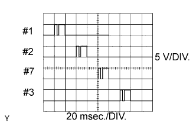 |
| ECM Terminal Name | From #1 to #8 and E1 |
| Tester Range | 5 V/DIV., 20 msec./DIV. |
| Condition | Idling with warm engine |
| WAVEFORM 2 |
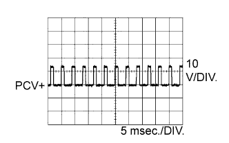 |
| ECM Terminal Name | PCV+ and PCV- |
| Tester Range | 10 V/DIV., 5 msec./DIV. |
| Condition | Idling or cranking with warm engine |
| WAVEFORM 3 |
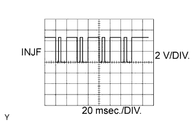 |
| ECM Terminal Name | INJF and E1 INF2 and E1 |
| Tester Range | 2 V/DIV., 20 msec./DIV. |
| Condition | Idling with warm engine |
| WAVEFORM 4 |
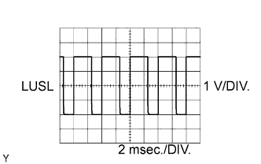 |
| ECM Terminal Name | LUSL and E1 LUS2 and E1 |
| Tester Range | 1 V/DIV., 2 msec./DIV. |
| Condition | Racing with warm engine |
| WAVEFORM 5 |
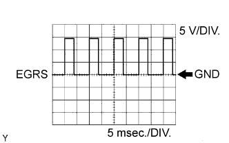 |
| ECM Terminal Name | EGRS and E1 ERS2 and E1 |
| Tester Range | 5 V/DIV., 5 msec./DIV. |
| Condition | Idling |
| WAVEFORM 6 |
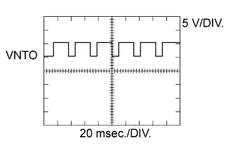 |
| ECM Terminal Name | VNTO and E1 VNO2 and E1 |
| Tester Range | 5 V/DIV., 20 msec./DIV. |
| Condition | Idling with warm engine |
| WAVEFORM 7 |
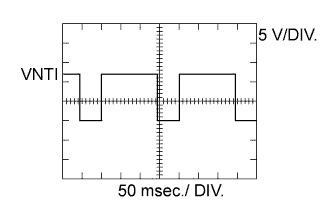 |
| ECM Terminal Name | VNTI and E1 VNI2 and E1 |
| Tester Range | 5 V/DIV., 50 msec./DIV. |
| Condition | Idling with warm engine |
| WAVEFORM 8 |
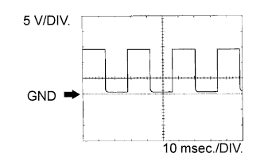 |
| ECM Terminal Names | TACH and E1 |
| Tester Range | 5 V/DIV., 10 msec./DIV. |
| Conditions | Idling |
| WAVEFORM 9 |
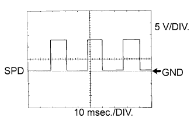 |
| ECM Terminal Name | SPD and E1 |
| Tester Range | 5 V/DIV., 10 msec./DIV. |
| Condition | Driving at vehicle speed of 40 km/h (25 mph) |
| WAVEFORM 10 |
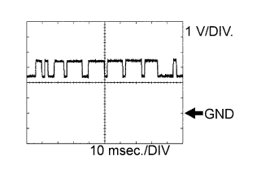 |
| ECM Terminal Name | CAN+ and E1 |
| Tester Range | 1 V/DIV., 10 msec./DIV. |
| Condition | Engine stopped, engine switch on (IG) |
| WAVEFORM 11 |
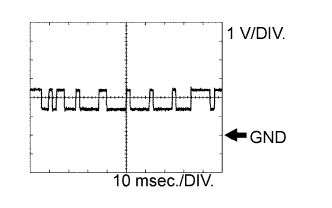 |
| ECM Terminal Name | CAN- and E1 |
| Tester Range | 1 V/DIV., 10 msec./DIV. |
| Condition | Engine stopped, engine switch on (IG) |